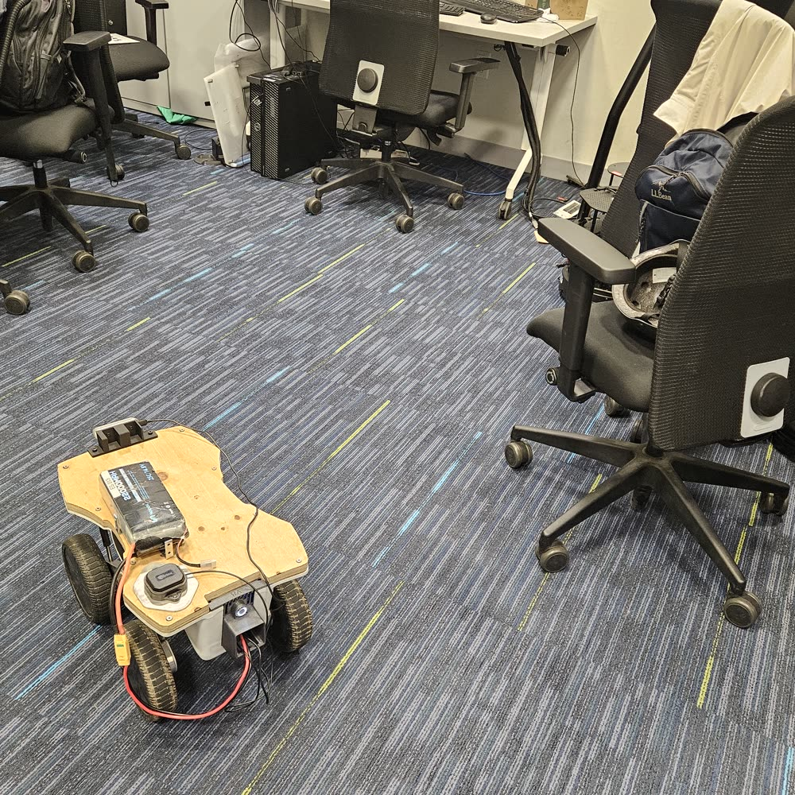
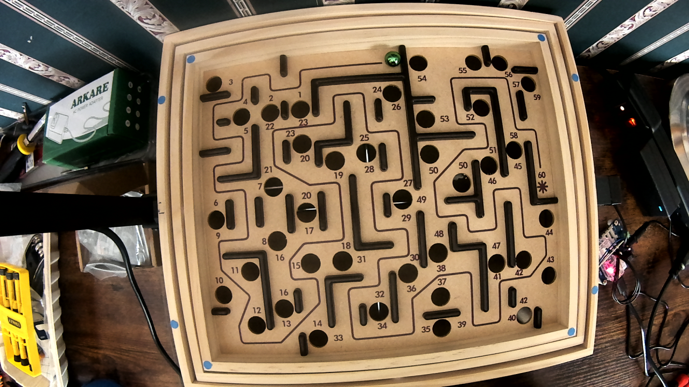
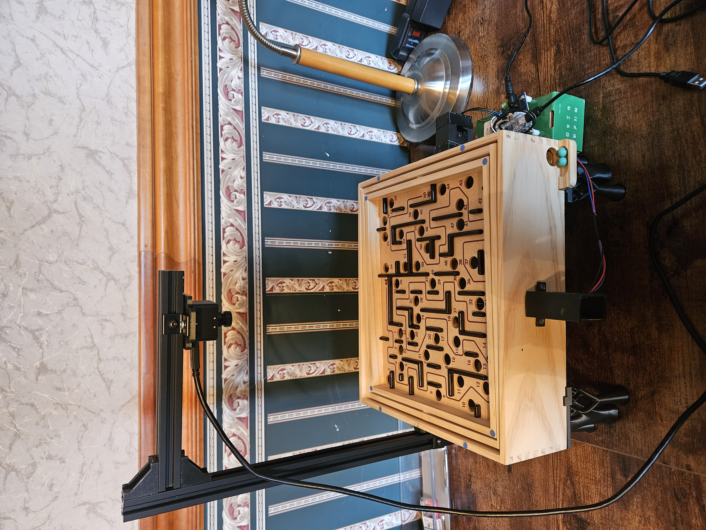
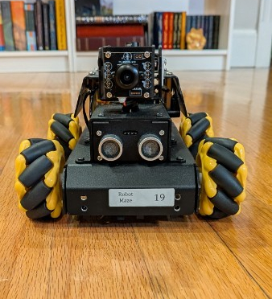

Projects
A selection of robotics and coding work.
Over the summer of 2026, I worked on autonomous navigation with ROS, first in simulation and then on a real robot. The code and longer write-ups are on GitHub.
The simulation work used Clearpath Robotics' Jackal in Gazebo (ROS 2 Foxy). The Jackal drives around a race track made of barriers, builds an occupancy map from its lidar, and plans a route to a goal with A*. Two of the three goals were reached. The third sits just past the end of a wall, and since the navigator simply steers toward the goal and turns away from anything in front of it, the robot spent the run inching along that same wall without ever getting past.
The hardware work used the EarthSense TerraSentia, an agricultural robot designed to drive between rows of crops, here roaming a lab instead. Its only sensor is an Intel RealSense depth camera. The depth images feed a simple obstacle avoider, which turns away from anything closer than a meter, and an occupancy grid that a Dijkstra planner searches for routes to goals clicked in RViz. Chairs, cables and desks (sometimes unintentionally) served as obstacles.

CyberRunner is based off the work of Thomas Bi and Raffaello D'Andrea at ETH Zürich. CyberRunner is an autonomous robot that uses reinforcement learning to guide a ball through the labyrinth board game. The ball must be manoeuvred around walls, while avoiding holes. CyberRunner is a vision-based system that uses real-time state estimation. You can learn more at cyberrunner.ai.


This robot was built for the Robot Maze event at the National Robotics Competition (NRC) in Marion, OH. MazeBot was built from this kit.
MazeBot's mecanum wheels allow it to strafe horizontally. With the front-mounted sonar,
it can detect an opening in the wall while strafing, then advance to the next programmed
move. The movement sequence is hard-coded, unlike earlier versions that relied primarily
on camera and sonar feedback. Reliable localisation was a challenge, mainly because of
wheel slipping. One solution was to deliberately overshoot openings and press against
walls to "reset" its position (hence the program is named dumbdumb.py).
